ggplot(data = <DATA>, mapping = aes(<MAPPINGS>)) +
<GEOM_FUNCTION>() +
<ADDITIONAL_LAYERS>Data Visualization in Healthcare Management (Lecture Notes)
1 Introduction to Data Visualization
1.1 Why Visualize Healthcare Data?
Healthcare managers make critical decisions daily that affect patient outcomes, operational efficiency, and financial performance. Data visualization transforms complex healthcare data into clear, actionable insights that support better decision-making.
Consider these scenarios:
- Hospital readmissions: Identifying patterns in 30-day readmission rates across different patient populations
- Patient satisfaction: Understanding which factors most strongly influence patient experience scores
- Resource utilization: Visualizing bed occupancy rates to optimize staffing levels
- Quality metrics: Tracking clinical outcomes across departments or time periods
Effective visualization helps healthcare managers:
- Identify patterns and trends that might be missed in tables of numbers
- Communicate findings clearly to diverse stakeholders (clinicians, administrators, board members)
- Support evidence-based decisions with visual evidence
- Monitor performance against benchmarks and targets
1.2 Why Use R for Visualization?
While tools like Excel can create basic charts, R offers several advantages for healthcare analytics:
- Reproducibility: Your code documents exactly how visualizations were created
- Flexibility: Unlimited customization options for publication-quality graphics
- Integration: Seamlessly combine data processing, analysis, and visualization
- Professionalism: Create graphics suitable for journal publications or executive presentations
Most importantly, the same code can be reused with updated data, saving time and ensuring consistency.
2 The Grammar of Graphics
2.1 Understanding ggplot2
The ggplot2 package in R implements a “grammar of graphics”—a systematic way to build visualizations by combining independent components.
Think of creating a visualization like building with layers:
- Data: What dataset are you visualizing?
- Aesthetics (aes): What variables map to visual properties (x-axis, y-axis, color, size)?
- Geometries (geom): What type of visualization (points, bars, lines)?
- Scales: How should data values translate to visual properties?
- Themes: What should the overall appearance be?
Every ggplot follows this basic template:
2.2 Key Concept: Layers
Visualizations in ggplot2 are built by adding layers with the + operator. This makes it easy to:
- Start with a basic plot and progressively refine it
- Reuse code by changing just one layer
- Combine multiple types of visualizations in one plot
3 Example Dataset: Patient Satisfaction Survey
For this lecture, we’ll use a simulated dataset from a patient satisfaction survey conducted across multiple hospital departments.
# Simulate patient satisfaction data
patient_data <- data.frame(
patient_id = 1:200,
age = round(rnorm(200, mean = 55, sd = 15)),
department = sample(c("Cardiology", "Orthopedics", "Emergency", "Surgery"),
200, replace = TRUE),
satisfaction_score = round(rnorm(200, mean = 7.5, sd = 1.8), 1),
wait_time_minutes = round(rlnorm(200, meanlog = 3.5, sdlog = 0.6)),
length_of_stay_days = round(rlnorm(200, meanlog = 1.2, sdlog = 0.8), 1)
) %>%
mutate(
# Ensure scores are between 1-10
satisfaction_score = pmin(pmax(satisfaction_score, 1), 10),
# Ensure age is realistic
age = pmin(pmax(age, 18), 95)
)
# Display first rows
head(patient_data, 10) patient_id age department satisfaction_score wait_time_minutes
1 1 63 Emergency 7.2 67
2 2 39 Emergency 7.2 40
3 3 57 Emergency 6.0 28
4 4 54 Orthopedics 9.2 73
5 5 45 Surgery 6.0 32
6 6 18 Orthopedics 6.1 29
7 7 44 Emergency 5.9 36
8 8 40 Emergency 10.0 22
9 9 57 Surgery 8.5 34
10 10 48 Surgery 8.6 58
length_of_stay_days
1 8.3
2 1.9
3 4.2
4 3.8
5 5.1
6 3.3
7 4.2
8 5.5
9 0.6
10 2.7Dataset Variables:
| Variable | Description | Type |
|---|---|---|
patient_id |
Unique patient identifier | Numeric |
age |
Patient age in years | Numeric (continuous) |
department |
Hospital department | Categorical |
satisfaction_score |
Overall satisfaction (1-10 scale) | Numeric (continuous) |
wait_time_minutes |
Wait time before seeing provider | Numeric (continuous) |
length_of_stay_days |
Hospital length of stay | Numeric (continuous) |
4 Visualizing Single Variables
4.1 Histograms for Continuous Variables
Histograms show the distribution of a continuous variable by dividing it into bins and counting observations in each bin.
When to use: Examining the distribution of age, wait times, length of stay, or any continuous measure.
ggplot(data = patient_data, mapping = aes(x = age)) +
geom_histogram()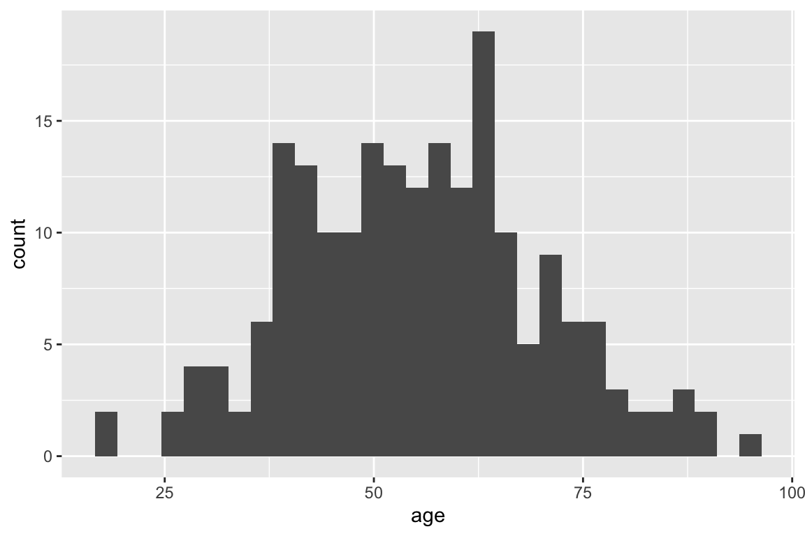
Improving the histogram:
ggplot(patient_data, aes(x = age)) +
geom_histogram(binwidth = 5, fill = "steelblue", color = "white") +
labs(title = "Distribution of Patient Ages",
x = "Age (years)",
y = "Number of Patients") +
theme_minimal()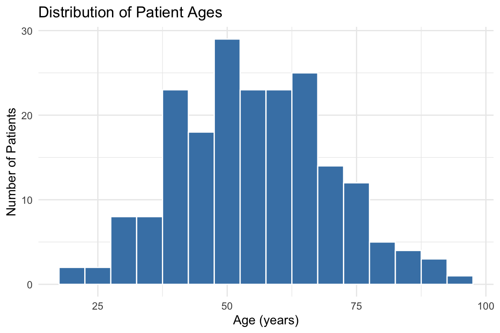
Key elements:
binwidth = 5: Each bar represents a 5-year age rangefill = "steelblue": Interior color of barscolor = "white": Border color (makes bars distinct)labs(): Add clear labelstheme_minimal(): Clean, professional appearance
4.2 Bar Charts for Categorical Variables
Bar charts display counts or frequencies of categorical variables.
When to use: Showing patient counts by department, admission type, insurance status, etc.
ggplot(patient_data, aes(x = department)) +
geom_bar(fill = "darkgreen", alpha = 0.7) +
labs(title = "Patient Volume by Department",
x = "Department",
y = "Number of Patients") +
theme_minimal()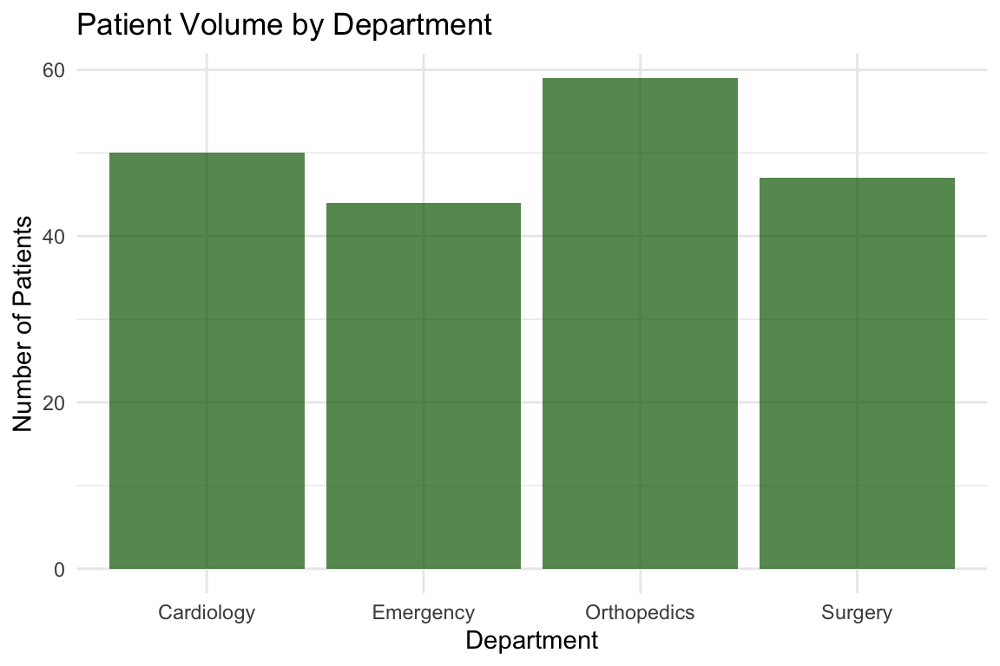
Note: geom_bar() automatically counts the number of observations in each category. The alpha parameter controls transparency (0 = fully transparent, 1 = fully opaque).
4.3 Box Plots for Distribution Summary
Box plots provide a compact summary of a distribution, showing median, quartiles, and potential outliers.
When to use: Comparing distributions across groups or identifying outliers in healthcare metrics.
ggplot(patient_data, aes(x = "", y = satisfaction_score)) +
geom_boxplot(fill = "coral", alpha = 0.6) +
labs(title = "Distribution of Patient Satisfaction Scores",
x = "",
y = "Satisfaction Score (1-10)") +
theme_minimal()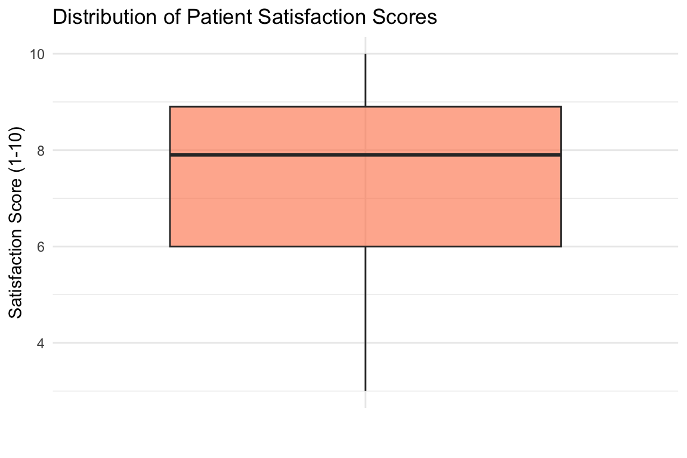
Interpreting box plots:
- Box: Contains the middle 50% of data (25th to 75th percentile)
- Line in box: Median value
- Whiskers: Extend to 1.5 × IQR (interquartile range)
- Points beyond whiskers: Potential outliers
5 Visualizing Relationships
5.1 Scatterplots for Two Continuous Variables
Scatterplots reveal relationships between two continuous variables.
When to use: Examining whether wait time affects satisfaction, whether age relates to length of stay, etc.
ggplot(patient_data, aes(x = wait_time_minutes, y = satisfaction_score)) +
geom_point(alpha = 0.5, color = "darkblue") +
labs(title = "Relationship Between Wait Time and Satisfaction",
x = "Wait Time (minutes)",
y = "Satisfaction Score (1-10)") +
theme_minimal()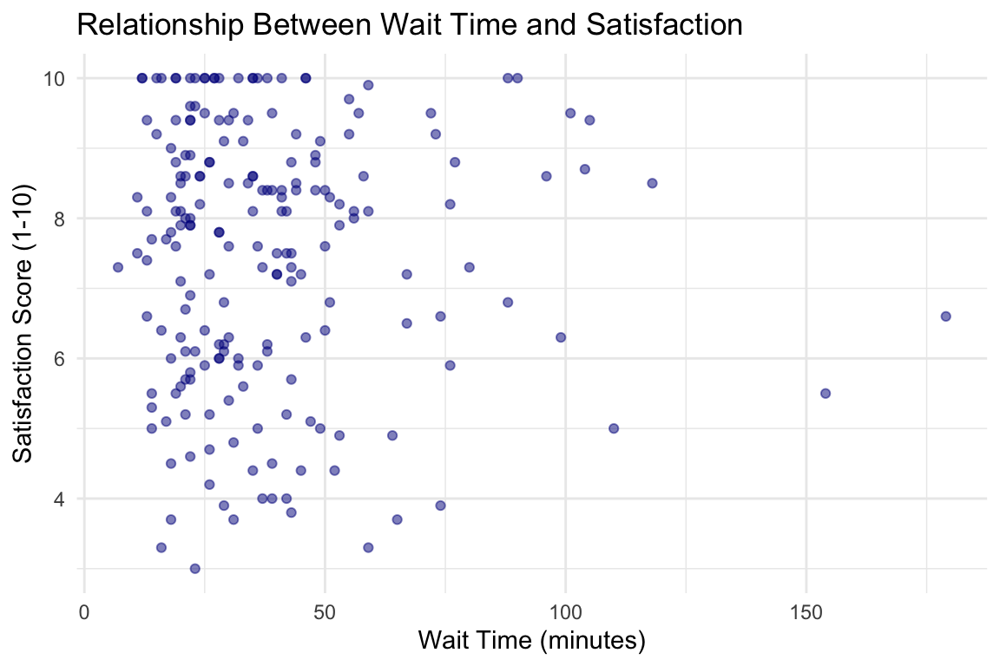
Adding a trend line:
ggplot(patient_data, aes(x = wait_time_minutes, y = satisfaction_score)) +
geom_point(alpha = 0.5, color = "darkblue") +
geom_smooth(method = "lm", se = TRUE, color = "red") +
labs(title = "Wait Time and Satisfaction with Linear Trend",
x = "Wait Time (minutes)",
y = "Satisfaction Score (1-10)") +
theme_minimal()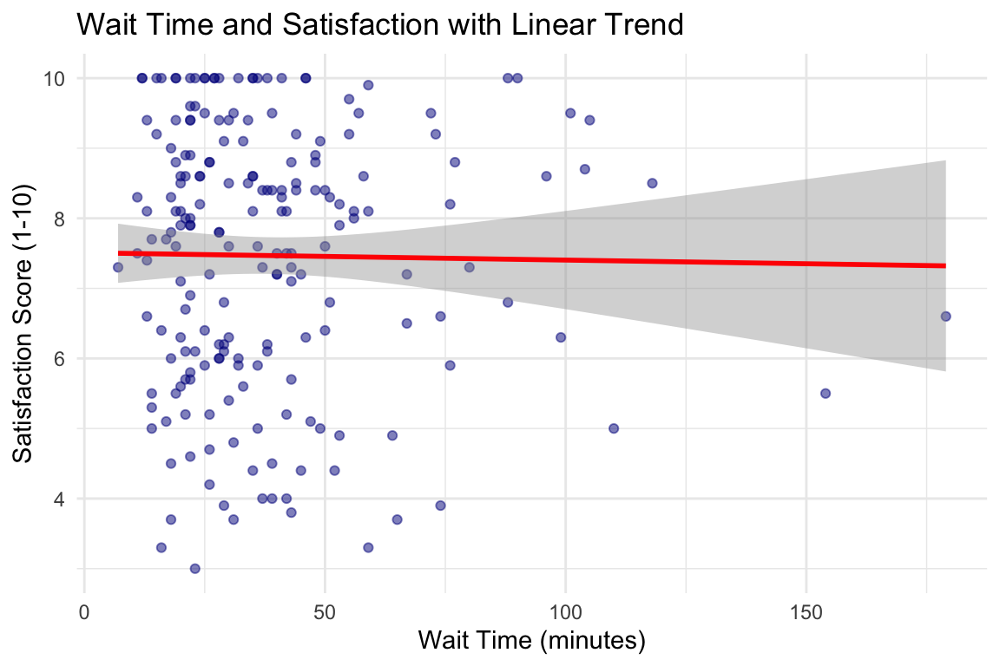
Key elements:
geom_smooth(method = "lm"): Adds linear regression linese = TRUE: Shows confidence interval (shaded area)alpha = 0.5: Makes points semi-transparent to see overlapping data
6 Grouped Comparisons
6.1 Comparing Groups with Box Plots
One of the most powerful features of ggplot2 is easy group comparisons.
When to use: Comparing patient satisfaction across departments, readmission rates by insurance type, etc.
ggplot(patient_data, aes(x = department, y = satisfaction_score, fill = department)) +
geom_boxplot(alpha = 0.7) +
labs(title = "Patient Satisfaction by Department",
x = "Department",
y = "Satisfaction Score (1-10)") +
theme_minimal() +
theme(legend.position = "none") # Remove redundant legend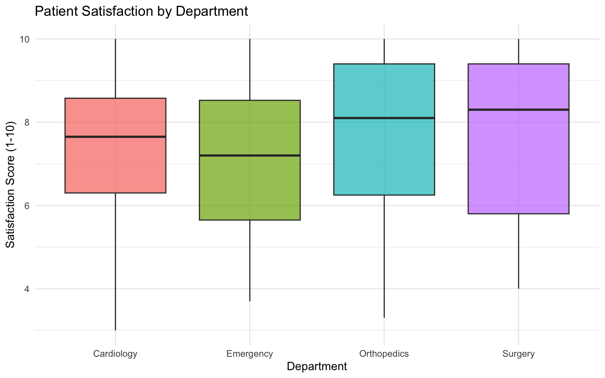
6.2 Grouped Scatterplots
Adding color or shape to represent groups in scatterplots.
ggplot(patient_data, aes(x = wait_time_minutes, y = satisfaction_score,
color = department)) +
geom_point(alpha = 0.6, size = 2) +
geom_smooth(method = "lm", se = FALSE) +
labs(title = "Wait Time and Satisfaction by Department",
x = "Wait Time (minutes)",
y = "Satisfaction Score (1-10)",
color = "Department") +
theme_minimal()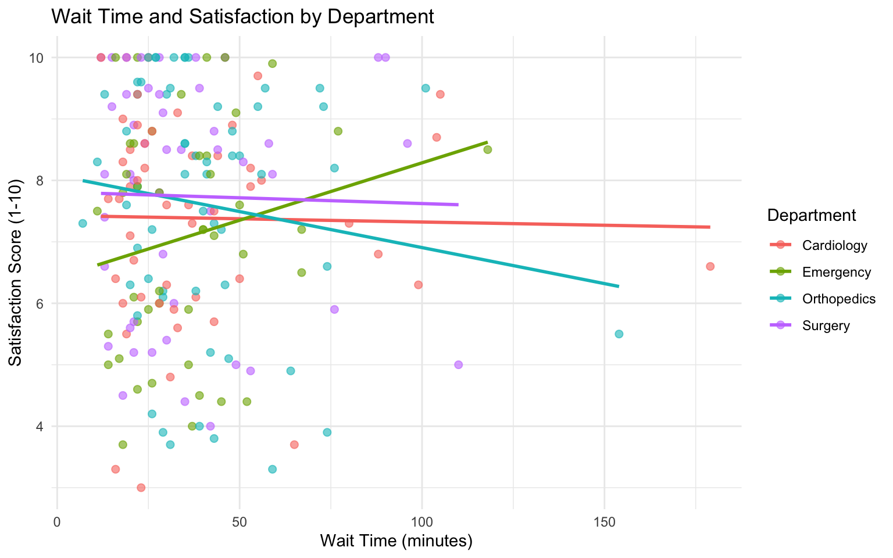
Interpretation: This visualization shows whether the relationship between wait time and satisfaction differs across departments.
6.3 Faceting: Small Multiples
Faceting creates separate panels for each group—a powerful technique for complex comparisons.
ggplot(patient_data, aes(x = wait_time_minutes, y = satisfaction_score)) +
geom_point(alpha = 0.5, color = "steelblue") +
geom_smooth(method = "lm", se = TRUE, color = "darkred") +
facet_wrap(~ department, nrow = 2) +
labs(title = "Wait Time vs. Satisfaction Across Departments",
x = "Wait Time (minutes)",
y = "Satisfaction Score (1-10)") +
theme_minimal()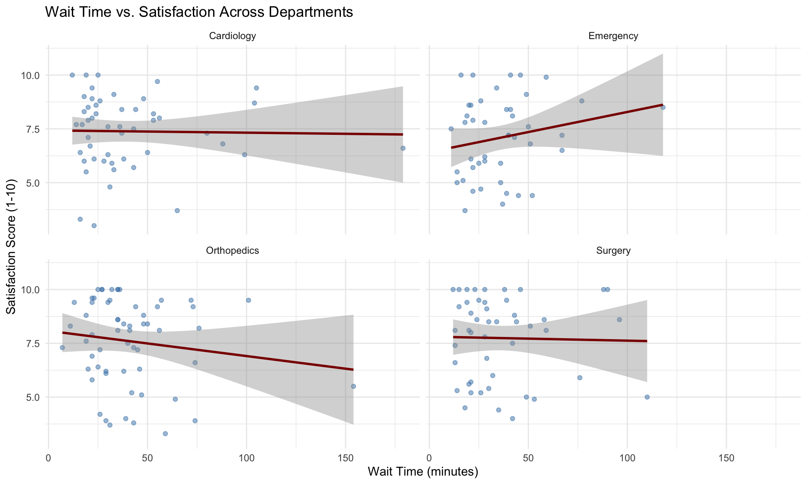
When to use faceting: When groups are too crowded on a single plot, or when you want to emphasize within-group patterns.
7 Data Structure for Visualization
7.1 Wide vs. Long Format
Many healthcare datasets come in “wide” format, but ggplot2 works best with “long” format data.
Wide format (one row per patient, separate columns for each measure):
| patient_id | age | satisfaction | wait_time |
|---|---|---|---|
| 1 | 45 | 8.2 | 35 |
| 2 | 67 | 6.5 | 67 |
Long format (one row per patient-measure combination):
| patient_id | age | metric | value |
|---|---|---|---|
| 1 | 45 | satisfaction | 8.2 |
| 1 | 45 | wait_time | 35 |
| 2 | 67 | satisfaction | 6.5 |
| 2 | 67 | wait_time | 67 |
Why long format? It allows ggplot2 to easily create grouped or faceted visualizations.
7.2 Converting Wide to Long
Using the pivot_longer() function from tidyr:
# Create a long-format version for certain visualizations
patient_long <- patient_data %>%
pivot_longer(
cols = c(satisfaction_score, wait_time_minutes),
names_to = "metric",
values_to = "value"
)
# View the structure
head(patient_long, 10)# A tibble: 10 × 6
patient_id age department length_of_stay_days metric value
<int> <dbl> <chr> <dbl> <chr> <dbl>
1 1 63 Emergency 8.3 satisfaction_score 7.2
2 1 63 Emergency 8.3 wait_time_minutes 67
3 2 39 Emergency 1.9 satisfaction_score 7.2
4 2 39 Emergency 1.9 wait_time_minutes 40
5 3 57 Emergency 4.2 satisfaction_score 6
6 3 57 Emergency 4.2 wait_time_minutes 28
7 4 54 Orthopedics 3.8 satisfaction_score 9.2
8 4 54 Orthopedics 3.8 wait_time_minutes 73
9 5 45 Surgery 5.1 satisfaction_score 6
10 5 45 Surgery 5.1 wait_time_minutes 32 Example use case: Comparing distributions of multiple metrics side-by-side.
patient_long %>%
filter(metric %in% c("satisfaction_score", "wait_time_minutes")) %>%
ggplot(aes(x = value, fill = metric)) +
geom_histogram(bins = 20, alpha = 0.7, color = "white") +
facet_wrap(~ metric, scales = "free", ncol = 2) +
labs(title = "Distributions of Key Patient Metrics",
x = "Value",
y = "Count") +
theme_minimal() +
theme(legend.position = "none")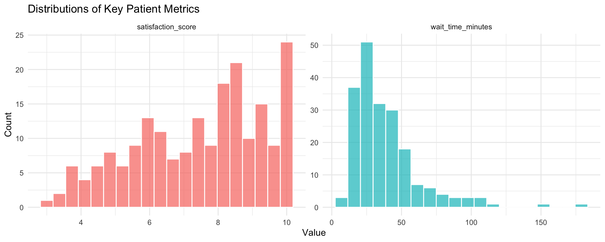
8 Customization and Polish
8.1 Color Schemes
Professional visualizations use thoughtful color schemes.
For categorical variables (departments, insurance types):
ggplot(patient_data, aes(x = department, y = satisfaction_score, fill = department)) +
geom_boxplot(alpha = 0.8) +
scale_fill_brewer(palette = "Set2") + # Professional color palette
labs(title = "Satisfaction Scores by Department",
x = "Department",
y = "Satisfaction Score (1-10)") +
theme_minimal() +
theme(legend.position = "none")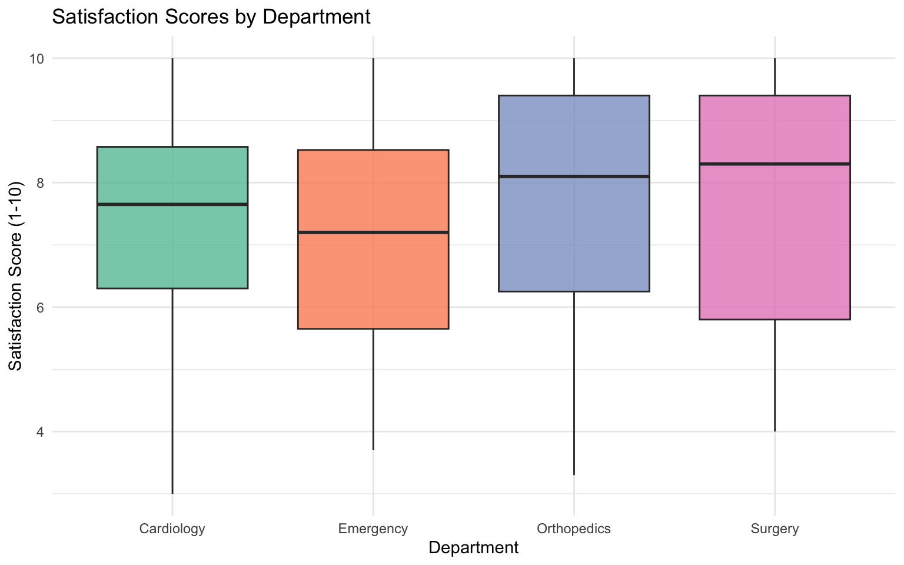
For continuous variables (creating heatmaps or gradient scales):
ggplot(patient_data, aes(x = wait_time_minutes, y = satisfaction_score,
color = age)) +
geom_point(size = 3, alpha = 0.7) +
scale_color_gradient(low = "lightblue", high = "darkblue") +
labs(title = "Wait Time, Satisfaction, and Patient Age",
x = "Wait Time (minutes)",
y = "Satisfaction Score (1-10)",
color = "Age (years)") +
theme_minimal()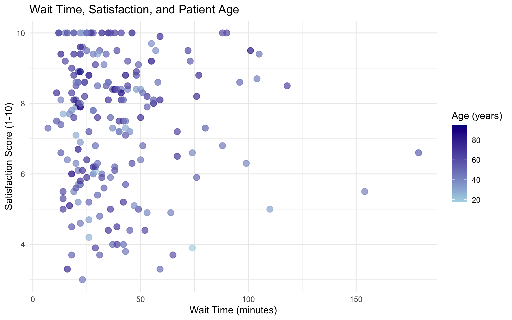
8.2 Themes and Styling
Themes control the overall appearance of your plot:
# Create base plot
base_plot <- ggplot(patient_data, aes(x = department, y = satisfaction_score,
fill = department)) +
geom_boxplot(alpha = 0.7) +
labs(title = "Satisfaction by Department") +
theme(legend.position = "none")
# Different theme options
library(patchwork)
p1 <- base_plot + theme_minimal() + labs(subtitle = "theme_minimal()")
p2 <- base_plot + theme_classic() + labs(subtitle = "theme_classic()")
p3 <- base_plot + theme_bw() + labs(subtitle = "theme_bw()")
p4 <- base_plot + theme_light() + labs(subtitle = "theme_light()")
# Combine plots
(p1 + p2) / (p3 + p4)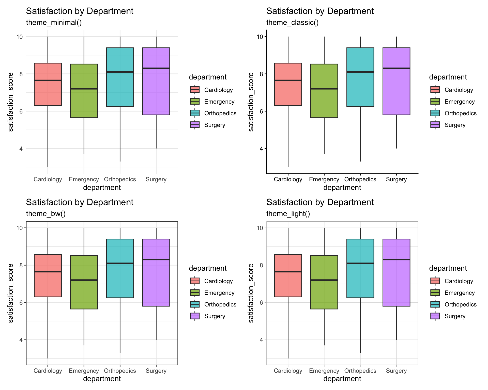
8.3 Best Practices for Healthcare Visualizations
8.3.1 1. Clear Labels and Titles
Always include:
- Descriptive title: What is being shown?
- Axis labels with units: “Age (years)”, “Wait Time (minutes)”, “Cost ($)”
- Legend labels: Clear category names, not variable codes
8.3.2 2. Appropriate Scale
- Start at zero for bar charts showing counts or totals
- Adjust scales for scatterplots to focus on the data range
- Use log scales when appropriate for skewed data (e.g., costs, length of stay)
8.3.3 3. Color Accessibility
- Use colorblind-friendly palettes (e.g.,
scale_fill_brewer()with “Set2” or “Dark2”) - Avoid red-green combinations
- Use redundant encoding (color + shape) when possible
8.3.4 4. Avoid Chartjunk
- Remove unnecessary grid lines
- Minimize 3D effects and decorations
- Let the data speak for itself
8.3.5 Example: Publication-Ready Plot
ggplot(patient_data, aes(x = wait_time_minutes, y = satisfaction_score)) +
geom_point(aes(color = department), alpha = 0.6, size = 2.5) +
geom_smooth(method = "lm", se = TRUE, color = "black", linetype = "dashed") +
scale_color_brewer(palette = "Dark2", name = "Department") +
scale_x_continuous(breaks = seq(0, 200, 25)) +
scale_y_continuous(breaks = 1:10, limits = c(1, 10)) +
labs(
title = "Patient Satisfaction Decreases with Longer Wait Times",
subtitle = "Analysis of 200 patient surveys across four departments",
x = "Wait Time (minutes)",
y = "Satisfaction Score (1-10 scale)",
caption = "Data: Hospital Patient Satisfaction Survey 2026"
) +
theme_minimal(base_size = 12) +
theme(
plot.title = element_text(face = "bold", size = 14),
plot.subtitle = element_text(color = "gray30"),
legend.position = "bottom"
)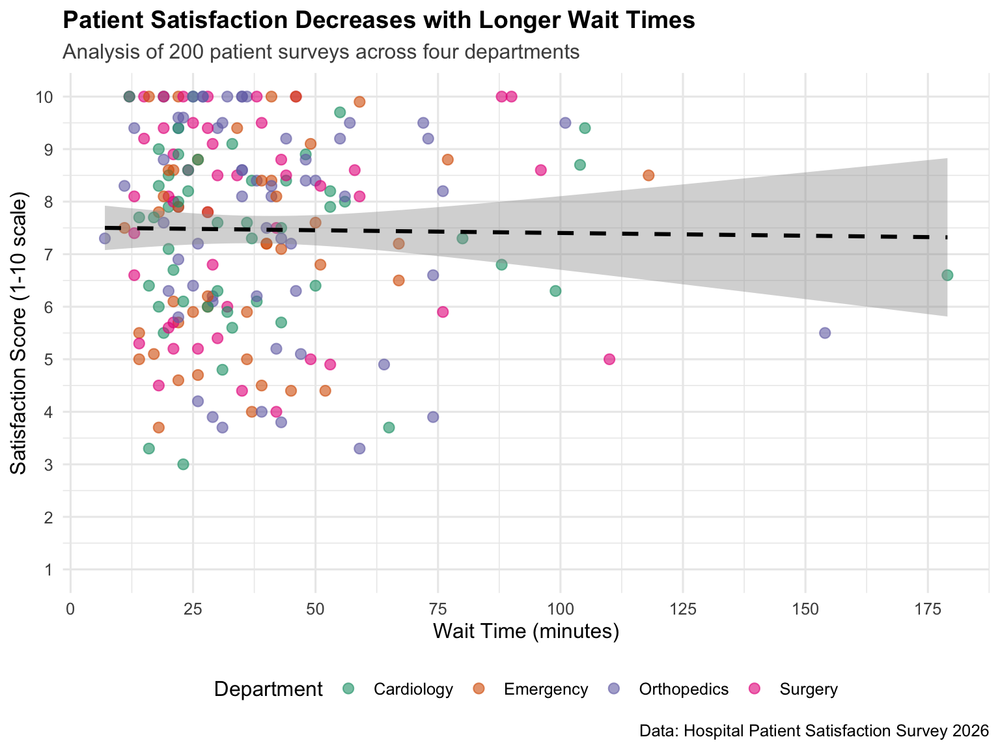
9 Common Visualization Types in Healthcare
9.1 Summary Table
| Visualization | Use Case | Variables |
|---|---|---|
| Histogram | Distribution of continuous variable | 1 continuous |
| Bar chart | Counts or frequencies | 1 categorical |
| Box plot | Distribution summary, compare groups | 1 continuous + 1 categorical |
| Scatterplot | Relationship between variables | 2 continuous |
| Line plot | Trends over time | 1 time + 1 continuous |
| Violin plot | Distribution shape by group | 1 continuous + 1 categorical |
| Facets/Small multiples | Compare patterns across groups | Any + 1 grouping variable |
10 Summary
In this lecture, you learned:
- Why visualization matters in healthcare management for decision-making and communication
- The grammar of graphics approach used by ggplot2 to build visualizations in layers
- Basic plot types: histograms, bar charts, box plots, scatterplots
- Grouped comparisons: Using color, facets, and multiple aesthetics
- Data structure: Wide vs. long format and when to use each
- Customization: Colors, themes, and professional polish
- Best practices: Clear labels, appropriate scales, accessibility
The key to mastering data visualization is practice. Start with simple plots and gradually add layers of complexity. Remember: the goal is always to communicate insights clearly, not to create the most complex visualization possible.
11 References and Resources
11.1 Key References
- Healy, K. (2018). Data Visualization: A Practical Introduction. Princeton University Press.
- Wickham, H., Navarro, D., & Pedersen, T. L. (2023). ggplot2: Elegant Graphics for Data Analysis. Springer. https://ggplot2-book.org/
- Wilke, C. O. (2019). Fundamentals of Data Visualization. O’Reilly Media. https://clauswilke.com/dataviz/
11.2 Healthcare-Specific Examples
- Schwabish, J. A. (2014). An Economist’s Guide to Visualizing Data. Journal of Economic Perspectives, 28(1), 209-234.
- Few, S. (2012). Show Me the Numbers: Designing Tables and Graphs to Enlighten (2nd ed.). Analytics Press.
11.3 Online Resources
- R Graphics Cookbook: https://r-graphics.org/
- ggplot2 documentation: https://ggplot2.tidyverse.org/
- Data-to-Viz (decision tree for chart selection): https://www.data-to-viz.com/